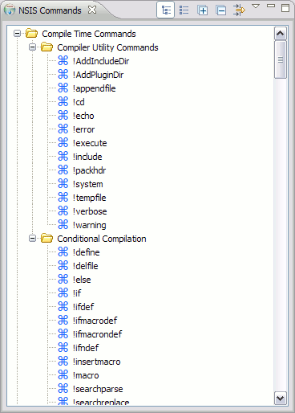
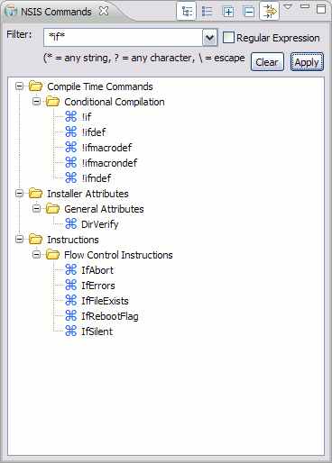
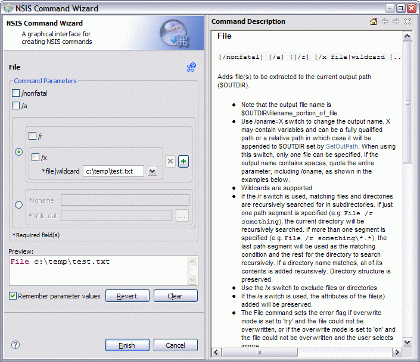
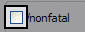
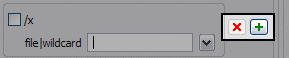
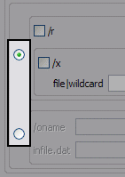

Command Wizard
The Command Wizard provides a graphical interface for generating syntactically correct NSIS command text in the EclipseNSIS editor. It consists of the NSIS Commands view and the NSIS Command Wizard dialog. For further information on NSIS commands, please consult the NSIS Users Manual.
NSIS Commands View
The command wizard is accessed through the NSIS Commands view. This view is opened automatically by the EclipseNSIS, though it is not necessarily brought to the front. Click on the image below to learn more about the NSIS Commands View.
|  |  |
|
Hierarchical Layout |
Flat Layout |
|
NSIS Commands View |
||
- Commands List
- The list of all available NSIS commands currently
supported by the command wizard. The list is version sensitive- i.e., it will only show commands which are valid for
the currently installed version of NSIS. The list can be viewed using either a hierarchical layout or a
flat layout. Commands can be inserted in three ways into the NSIS script being currently edited using the EclipseNSIS editor:
- Drag a command from the commands view and drop it onto the NSIS script.
- Double-click a command in the commands view.
- Highlight a command in the commands view and press the Enter button.
- Hierarchical Layout
- Switch NSIS Commands View to hierarchical layout. The hierarchical layout lists commands organized into categories as defined in the NSIS Users Manual.
- Flat Layout
- Switch NSIS Commands View to flat layout. The flat layout lists commands sorted alphabetically.
- Expand All
- Expand all categories. This is only available for the hierarchical layout.
- Collapse All
- Collapse all categories. This is only available for the hierarchical layout.
- Filter
- Filter the displayed list of commands. This supports simple wildcards as well as regular expressions. The supported regular expression constructs are documented by the Java Pattern class.
|  |
Filtered Commands |
NSIS Command Wizard Dialog
The NSIS Command Wizard dialog provides the actual graphical interface for entering command parameters. Click on the image below to learn more about the NSIS Command Wizard dialog.

- Command Name
- The name of the NSIS Command being created.
- Command Parameters
- A list of parameters accepted by the command. Parameters can usually be entered using editable Text
fields or drop down lists. Required parameters are prefixed with an asterisk (*). Optional parameters are preceded by a checkbox. Repeatable
parameters, e.g. in case of !macro parameters,
include buttons to add or remove parameter instances. When a command has multiple different syntax types,
e.g. for the File command, the desired syntax type
can be chosen using radio buttons.

Optional Parameter

Repeatable Parameter

Multiple Syntax Types
- Preview
- Preview of the command that will be generated by the wizard. This will be blank if there is an error in any of the wizard parameters.
- Show/Hide Description
- Show the Command Description. If it is already visible, this button has no effect.
- Command Description
- The description of the NSIS command as documented in the NSIS Users Manual.
- Remember Parameter Values
- When checked, the values entered for the command parameters are saved when the Finish button is clicked, and will be restored the next time the wizard is invoked for the current command. This setting is applied on a command-by-command basis. If the checkbox is unchecked, then all remembered values for the current command are lost when the Finish button is clicked. By default, parameter values are NOT remembered.
- Revert
- Revert the command parameters to the previously saved values. This button is only enabled if the Remember Parameter Values checkbox is checked and there are previously saved values to recall..
- Clear
- Clears all parameter values and restores the wizard to a pristine state .
Previous | Contents | Next
Copyright © 2004-2010 Sunil Kamath (IcemanK).